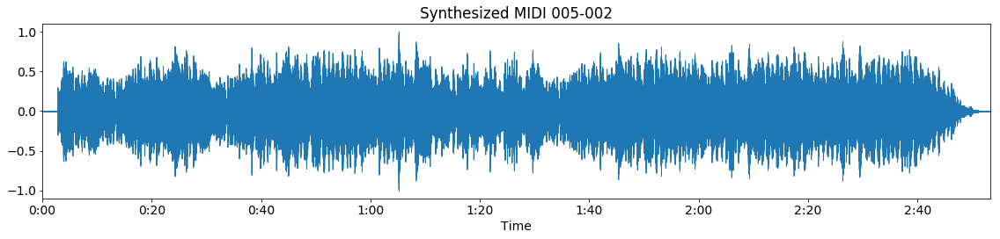

Aligning MIDI to audio¶
In order to receive audio-timed chord labels from a MIDI file, DECIBEL first finds an optimal alignment from the Midi file to the audio file, realigns the MIDI file using this alignment and then uses a MIDI chord recognizer to estimate the chord labels on the realigned MIDI file. The audio-midi aligner contains methods to re-align the MIDI file to the audio file.
For alignment between MIDI files and audio recordings, DECIBEL uses a DTW algorithm by Raffel and Ellis ([raffel2016optimizing]) Dynamic Time Warping (DTW) is a common technique to align two feature vectors, for example two representations of the same song.
Let us have a look at the outline of the algorithm. First, all MIDI files are synthesized using the fluidsynth software synthesizer with the FluidR3_GM soundfont. Now we have a waveform representation for both the audio and the MIDI file, as shown below:
Audio waveform

Synthesized MIDI waveform
Note that our example MIDI file starts with silence, while in the audio recording the music starts immediately. Also, the MIDI file has a longer duration, as the MIDI file repeats the chorus an additional time, compared to the audio file. Then, the Constant-Q transform is calculated for both the audio and the synthesized MIDI waveform:
Audio CQT
Synthesized MIDI CQT

Features are found by aggregation over the Constant-Q transform vectors. Then, the optimal path between the audio file and the synthesized MIDI is calculated using DTW. This results in an optimal path and the alignment confidence score:
Alignment path
In this figure, we see that the alignment path starts not in the coordinate (0, 0), but a bit to the right: the silence at the start of the MIDI file is not mapped to any position in the audio file. The same goes for the end of the MIDI file, which is a superfluous repetition of the chorus. Finally, this alignment path is used to remap the MIDI file to the audio recording:
MIDI re-alignment

Decibel uses the unchanged parameter setting reported in the paper by [raffel2016optimizing]:
Parameter |
Setting |
|---|---|
Feature representation |
log-magnitude Constant-Q transform |
Time scale |
every 46 milliseconds |
Cost function |
cosine distance |
Penalty |
median distance of all pairs of frames |
Gully |
0.96 |
Band path constraint |
none |
Synthesize MIDI files¶
The decibel.audio_midi_aligner.synthesizer module contains functions for synthesizing MIDI files using the
fluidsynth software synthesizer.
-
decibel.audio_midi_aligner.synthesizer.synthesize_midi_to_wav(midi_file_path_from: str, sampling_rate: int = 22050)[source]¶ Converts a midi file, specified to its path, to a waveform and writes the result as a wav file
- Parameters
midi_file_path_from – Path to the midi file which will be converted
sampling_rate – Sampling rate of the audio
Aligning synthesized MIDI to audio¶
The decibel.audio_midi_aligner.aligner module contains functions for finding the alignment between the
synthesized MIDI file and the audio recording. The align_midi() function (in the Alignment class) finds the
alignment between a single MIDI file and the matched audio recording and returns an Alignment object.
The function align_single_song() finds the alignment between the audio file of the given song and all matched
MIDI files.
Since this can take a long time, it is possible to interrupt and resume this process: all MIDI files that are aligned,
are stored and can be reloaded quickly when they are needed in a new program run.
-
decibel.audio_midi_aligner.aligner.align_midi(audio_cqt: numpy.ndarray, audio_times: numpy.ndarray, full_synthesized_midi_path: str, full_alignment_write_path: str, alignment_parameters: Optional[decibel.audio_midi_aligner.alignment_parameters.AlignmentParameters] = None)[source]¶ Align audio (specified by CQT) to synthesized MIDI (specified by path), return path and score of the alignment
- Parameters
alignment_parameters – Parameters for alignment
audio_cqt – The CQT of the audio of the alignment
audio_times – Array of times of the audio (from compute_cqt function)
full_synthesized_midi_path – The path to the synthesized MIDI file
full_alignment_write_path – The path to write the alignment to
-
decibel.audio_midi_aligner.aligner.align_single_song(song: decibel.music_objects.song.Song, alignment_parameters: Optional[decibel.audio_midi_aligner.alignment_parameters.AlignmentParameters] = None)[source]¶ Align each MIDI file that is matched to this song to the song. As part of the procedure, each MIDI will be synthesized and the alignment of each MIDI will be written to a file.
- Parameters
alignment_parameters – Parameters for alignment
song – The Song object for which we align each MIDI file